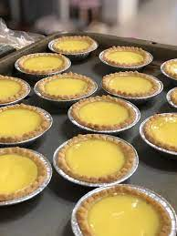

Filipino Egg Tarts

Description
A sweet and creamy filipino dessert, these egg tarts are quick and easy to make!
Ingredients
- 30 small pastry shells
- 8 egg yolks
- 1 can sweetened condensed milk
- 1 can evaporated milk
- 2 tsp vanilla extract
Steps
- Mix the egg yolks, sweetened condensed milk, evaporated milk
and vanilla extract together in a large bowl
- Scoop the mixture into a pastry shell just below full
- Bake in oven for approximately 20 mins or until mixture sets but is still jiggly
- After baking, let egg tarts rest in room temperature for 30 mins